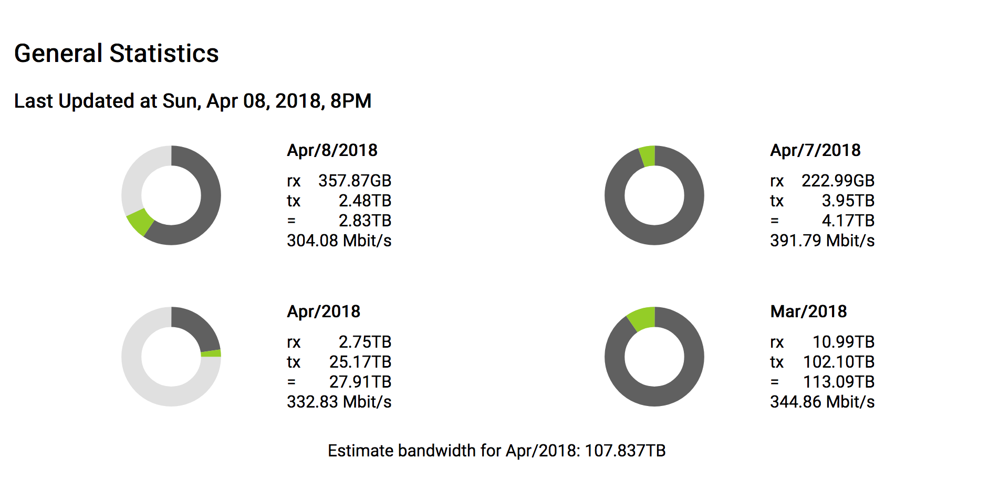
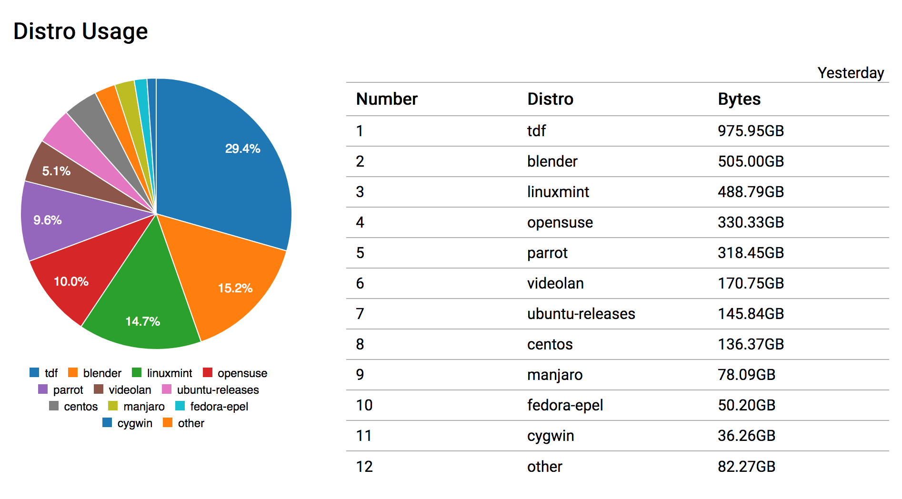
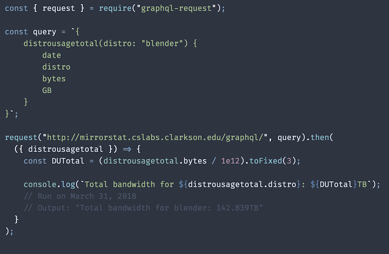
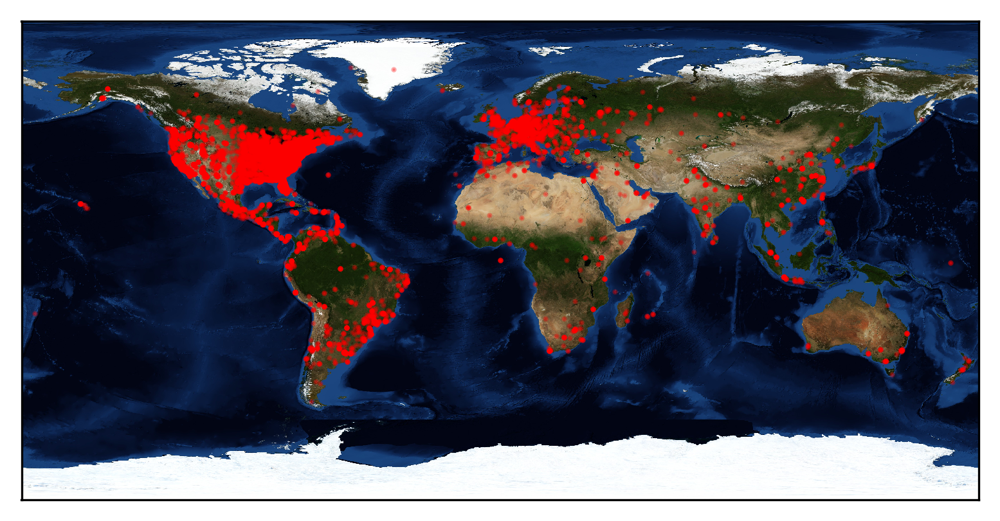

Clarkson University Mirror
Benjamin Lannon
April 14, 2018
What is a Mirror?
A Mirror stores copies of Open Source Software and allows users to download or update software close to their physical location.
Computer Science students at Clarkson have maintained 4 iterations of Mirror since 2001.
Projects Hosted
35 Projects: 20 Linux Distros, 15 Software Products
Some notable ones include LibreOffice, VLC, Ubuntu, and many others

Mirror Metric Terminology
- RX: Recieved data in bytes
- TX: Transferred data in bytes
- Rate: Transfer rate in Mbit/s
MirrorBandwidthStats
A program to analyze hourly, daily, and monthly usage and store to backend database
Distrousage
Daily Statistics on per-project bandwidth usage
GraphQL API
API to quickly query data from the database
Big Achievements
- 1.0PB bandwidth reached (1,000TB) on Jan 5, 2018
- Blender & Libreoffice have frequently been getting 0.5-1TB bandwidth daily
- Mirror is a Global Service
Global Usage on April 2nd
Questions?
Mirror Stats: https://mirror.clarkson.edu/stats.html